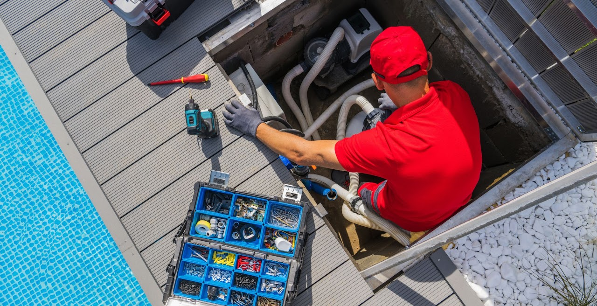
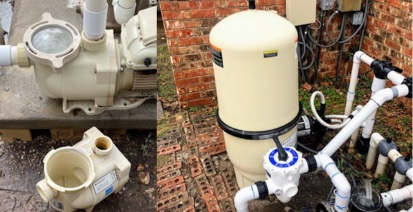
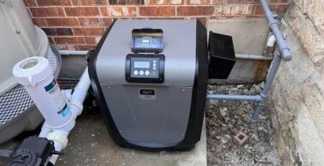
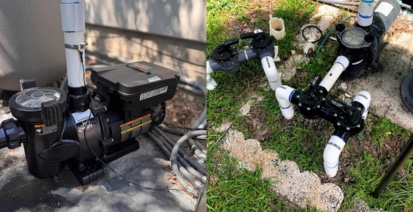
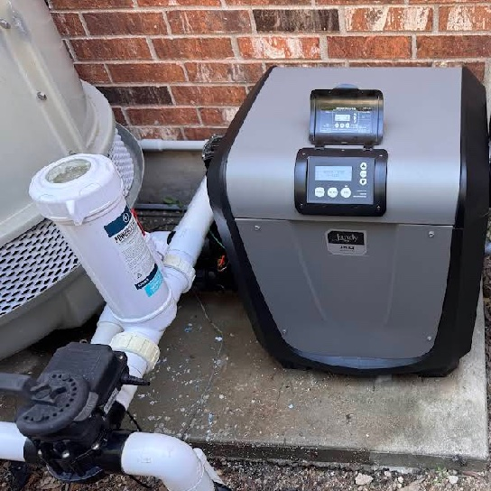

Austin’s trusted in-ground pool repair & equipment specialists
Welcome to Sunsitive Pools, your trusted partner for professional pool and spa repair in the Austin area. With nearly two decades of hands-on experience, we specialize in keeping residential pools running efficiently, safely, and reliably.

We don’t just fix pools — we restore your oasis
Since 2005, our mission has been simple: deliver dependable, high-quality solutions that restore comfort and confidence to every pool owner we serve.
From complete pool equipment repair to expert heater replacement, pump replacement, and filter replacement, our skilled technicians diagnose issues quickly and fix them right the first time. We also provide reliable weekly pool service, salt system repair and installation, automation system upgrades, PVC repair, and valve repair.
As a Jandy Pro Authorized Technician, we are trained to service and install advanced pool systems with precision and care. At Sunsitive Pools, we don’t just fix pools — we restore your oasis so you can enjoy crystal-clear water without the worry.



Repairing pool equipment. Replacing what fails. Restoring your in-ground pool.
At Sunsitive Pools, we specialize in professional pool equipment repair and complete pool care solutions designed to keep your system running efficiently year-round.
Pool Equipment Repair
Our professional pool equipment repair service ensures every component of your system operates efficiently and reliably. We diagnose and repair pumps, heaters, filters, automation controls, salt systems, valves, and plumbing to restore performance, prevent breakdowns, and extend equipment life.
Learn More About Pool Equipment RepairWeekly Service
Our dependable weekly service keeps your pool clean, balanced, and swim-ready year-round. We handle water chemistry testing, chemical balancing, debris removal, equipment inspection, and system checks to prevent issues before they become costly repairs.
View Weekly Service DetailsHeater Replacement
If your heater is outdated or failing, we provide expert heater replacement with energy-efficient options. Our team removes old units, installs new systems properly, and ensures safe, optimal heating performance so you can enjoy a longer, comfortable swim season.
See Heater Replacement ServicePump Replacement
We offer professional pump replacement to improve circulation, reduce energy costs, and enhance overall system efficiency. Upgrading to a modern, energy-efficient pump ensures quieter operation, better water movement, and long-term reliability.
Learn About Pump ReplacementFilter Replacement
Proper filtration is essential for clean water. Our filter replacement service includes cartridge, sand, and DE filter upgrades to improve clarity, reduce strain on equipment, and maintain healthy swimming conditions.
Explore Filter ReplacementSalt System
We provide salt system repair and installation to maintain balanced, efficient sanitation. From salt cell replacement to system diagnostics and calibration, we ensure your pool stays clean with softer-feeling water and consistent chlorine generation.
View Salt System RepairAutomation System
Upgrade your pool with advanced automation system installation and repair. We integrate smart controls for pumps, heaters, lighting, and water features, giving you convenient control, improved efficiency, and seamless pool management.
See Automation ServicesPVC Repair
Our PVC repair service addresses leaks, cracks, and plumbing damage that can disrupt circulation. We restore proper water flow, prevent water loss, and protect your equipment from pressure-related issues.
Learn More About Plumbing RepairValve Repair
Faulty valves can impact circulation and system efficiency. We provide precise valve repair and replacement to ensure proper water direction, balanced flow, and smooth equipment operation.
Explore Valve RepairJandy Pro Authorized Technician
As a Jandy Pro Authorized Technician, Sunsitive Pools delivers manufacturer-trained expertise and warranty-compliant service you can trust. Our technicians are experienced in servicing and installing advanced salt system and automation system controls, giving you better efficiency and convenience.
Since 2005, we’ve been committed to providing Austin homeowners with dependable solutions that restore performance, extend equipment life, and keep pools operating at their best.

Diagnose first. Fix it right.
Call or email
Tell us what your pool is doing — noises, cloudy water, no heat, error codes.
Full diagnostics
We inspect the whole system to find the true cause, not just the symptom.
Honest options
Repair first when it makes financial sense — with straightforward pricing.
Tested & running
Installed to manufacturer standards, pressure-tested and verified before we leave.
Frequently asked questions
Quick answers to the problems Austin pool owners call us about most.
Still stuck? Call usWhy is my pool pump not turning on?
If your pool pump won’t start, it’s usually caused by:
- Tripped breaker
- Faulty capacitor
- Motor failure
- Automation system issue
If the pump hums but doesn’t run, it’s often a bad capacitor. If it’s completely dead, it may need motor repair or full replacement.
Why is my pool pump making loud noise?
Loud or grinding noises usually mean:
- Worn motor bearings
- Air leak in suction line
- Cavitation (low water flow)
- Debris stuck in impeller
Ignoring it can burn out the motor. Early repair saves you from full pump replacement.
Should I repair or replace my pool pump?
Repair if:
- Pump is under 5–7 years old
- Issue is capacitor or seal-related
Replace if:
- Motor is burnt
- Pump is 8–12+ years old
- Repeated breakdowns
We help you choose the most cost-effective solution.
What brands do you repair?
We service and install:
- Jandy
- Pentair
- Hayward
We are a Jandy Pro Authorized Technician.
Why is my pool heater not heating?
Common causes:
- Dirty filter restricting flow
- Faulty igniter
- Pressure switch failure
- Scale buildup
- Low gas pressure
Heaters usually last 7–10 years in Texas. We provide heater repair and full heater replacement.
How much does heater replacement cost?
It depends on:
- Heater size (BTU rating)
- Gas vs electric
- Installation requirements
In Austin, heater replacement varies widely based on model and setup. We provide honest upfront estimates.
Why is my salt system not generating chlorine?
Usually caused by:
- Worn salt cell
- Low salt level
- Calcium buildup
- Bad control board
Salt cells typically last 3–5 years. We test and replace salt systems properly.
Why is my pool water cloudy?
Cloudy water is usually:
- Dirty filter
- Poor circulation
- Chemical imbalance
- Failing pump
If chemicals are balanced but water stays cloudy, your filter or pump may be failing.
How do I know if I have a pool leak?
Signs include:
- Water level dropping more than ¼ inch per day
- Air bubbles in pump
- Wet soil near equipment
- Cracks in PVC plumbing
We handle leak detection and PVC repair.
How often should I schedule weekly pool service?
In Texas heat, weekly service is highly recommended because:
- High evaporation
- Heavy algae growth
- Equipment wear
Weekly service prevents expensive repairs.
Share your experience
Your review helps us improve and helps others find trusted pool service.
Ready for reliable, professional pool care?
Whether you need pool equipment repair, weekly service, heater replacement, pump replacement, filter replacement, salt system support, automation system upgrades, PVC repair, or valve repair — Sunsitive Pools is here to help.